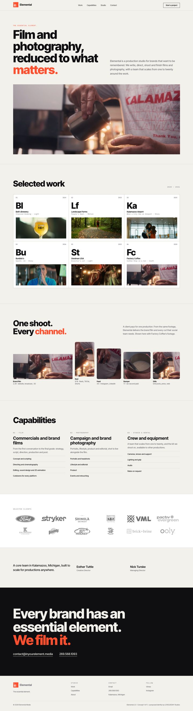
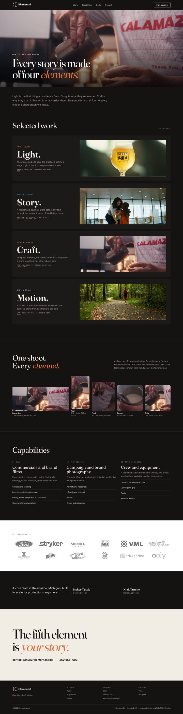
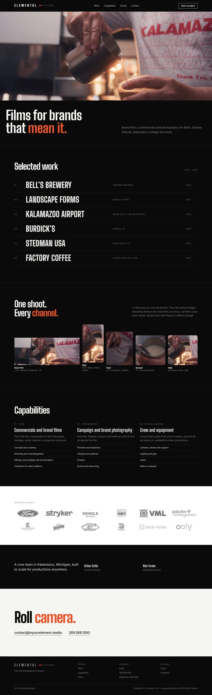
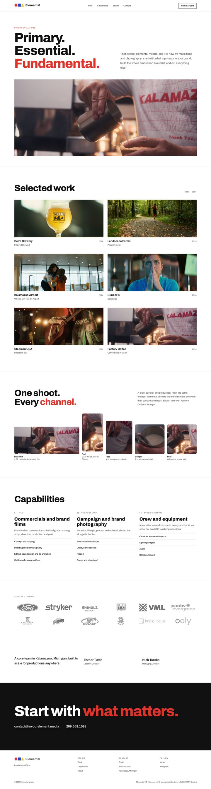
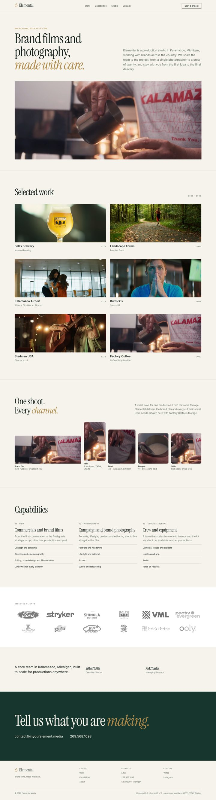

Five complete brand directions for Elemental, each with a proposed mark, type system, palette and new copy, and each playing on the idea of elements. Every film, client, service and contact is Elemental’s own. Client logos stay grey until you hover over them, and every concept shows how one shoot becomes the brand film plus every social cut.

Elemental as the element every brand needs. A periodic-table system: the mark is a tile, every film is an element with its own symbol, and the grid does the storytelling.
“The essential element.”

Every film is made of four things. Fire is light, water is story, earth is craft, air is motion. An alchemical mark of four triangles, four colours, and work you browse by element.
“Light. Story. Craft. Motion.”

The national production-house move. A monochrome studio identity, a condensed wordmark with a single ember bar, a credits-roll index of films, and almost no copy. The work carries it.
“Film and photography for brands.”

Elemental means primary. So the identity is built from primaries: a circle, a square and a triangle in red, blue and yellow. Swiss grid, heavy grotesk, confident and corporate.
“Fundamental films.”

The premium agency direction. Deep evergreen and brass, an editorial serif, a refined flame redrawn as a single line. Built for a CMO: calm, credible, and specific about how the work gets made.
“Brand films, made with care.”